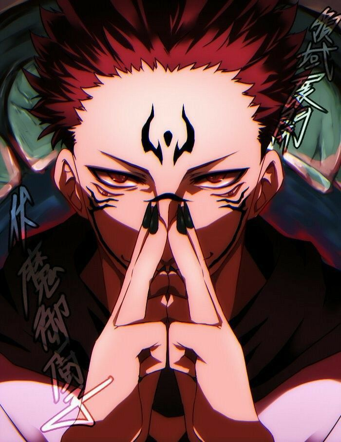

Satoru Gojo é uma raridade, uma anomalia que desequilibra o mundo de
Jujutsu Kaisen. Nasceu abençoado com uma união de poderes inacreditáveis,
o que lhe rendeu o título de “o mais forte”. Tal posição, para ele,
sempre pareceu um fardo. Ser o mais forte também significava ser
solitário.Seja no passado, seja no presente, Gojo sempre disse ser o mais
forte. Essa certeza sobre sua força, no entanto, revela em seu íntimo sua
solidão. Quanto mais só, mais forte ele se sentia. Quanto mais forte,
mais só. Especialmente após a morte de seu melhor amigo, enfrentando a
lógica do mundo de feiticeiros e tendo que lidar com “velhos
burocráticos”, Gojo parecia cada vez mais sozinho em sua jornada.
Ryomei Sukuna

Não diferente de Gojo, Sukuna experimenta sua solidão. Ambos, de formas
díspares, mas estranhamente semelhantes, se aproximam, Gojo e Sukuna, da solidão.
assunto. Yorozu percebe nele um olhar solitário, uma alma desamparada, de
alguma forma.Sukuna também experimenta a solidão, do mesmo tipo de Gojo.
Ser forte significa estar distante, desassociado, sozinho. Em outra
passagem, enquanto Gojo ainda estava selado, Shoko, sua amiga, relembra
algumas de suas palavras. Saber de tudo isso é importante para
compreender o contexto e o tema dos dois personagens, bem como suas
escolhas e, consequentemente, suas conclusões.